dism.exe /online /enable-feature /featurename:Microsoft-Windows-Subsystem-Linux /all /norestartCDO installation and use
1. From the CDO documentation
CDO stands for Climate Data Operators
CDO is meant for Posix compatible operating systems (like Linux)
Nevertheless, here you can find the official recommendations to run CDO on Windows
The Windows Subsystem for Linux version 2 (wsl2) installs a Linux kernel to create a proper
compatibility layer for WindowsThe following steps correspond to option #2 on the documentation and works for Windows 10
In case of Windows 8, wsl1 should be installed (not yet tested for our purpose)
Windows S is incompatible
Should also work in MacOS
2. Install wsl
The following steps were taken from here
Note that these steps are for wsl version 2
Some visual aid is added
2.1. Enable the Windows Subsystem for Linux
Open PowerShell as Administrator:
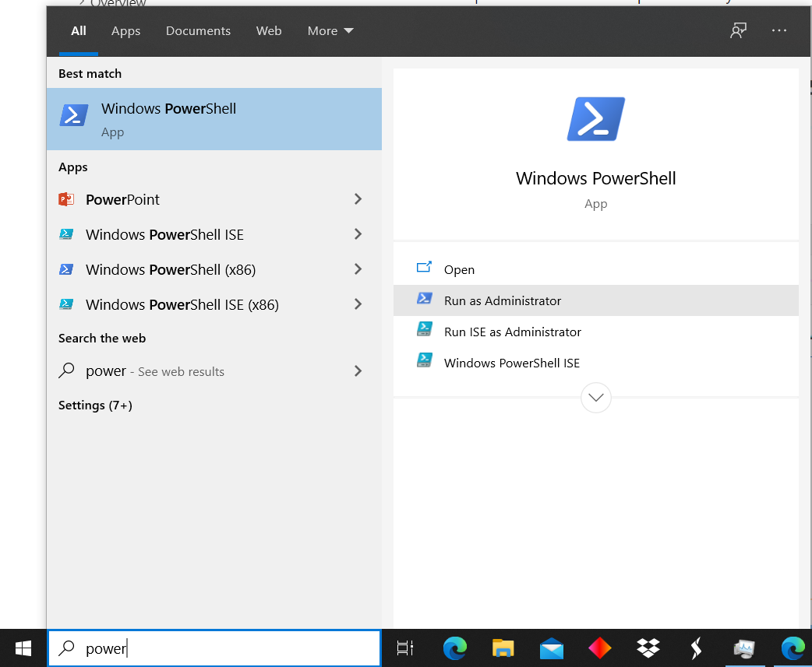And run (type or copy — paste [right-click on PowerShell] and then press enter):
2.2. Update to WSL 2 (check Windows version)
Windows 10 version 1903+, build 18362+. For most computers (x64)
Check with Win key + R, type winver → OK
Update if needed:
If you are running Windows 10 version 1903 or 1909, open "Settings" from your Windows menu, navigate to "Update & Security" and select "Check for Updates". Your Build number must be 18362.1049+ or 18363.1049+, with the minor build # over .1049.
2.3. Enable Virtual Machine feature
From the PowerShell as Administrator run:
dism.exe /online /enable-feature /featurename:VirtualMachinePlatform /all /norestartRestart to complete WSL install and updates
2.4. Download the Linux kernel update package
Download WSL2 Linux kernel update package for x64 machines
Install as administrator (elevated permissions)
2.5. Set WSL 2 as your default version
From the PowerShell as Administrator run:
wsl --set-default-version 2wsl2 setup finished!
3. Install Linux distro
Open the Microsoft Store and select a Linux distribution (distro)
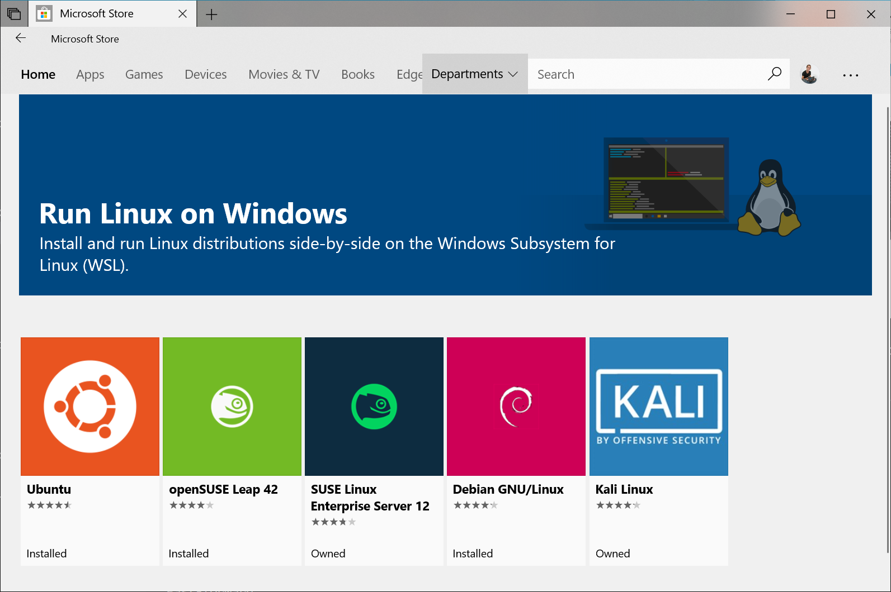Ubuntu 18.04 and 20.04 were tested for CDO. After this, Ubuntu
should be a searchable program in Windows
3.1. Setting Ubuntu
Open the Ubuntu app
On the first lunch, it will show this:
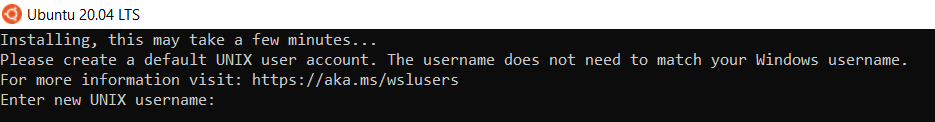Set credentials, user and password (twice)
Output should look like this:
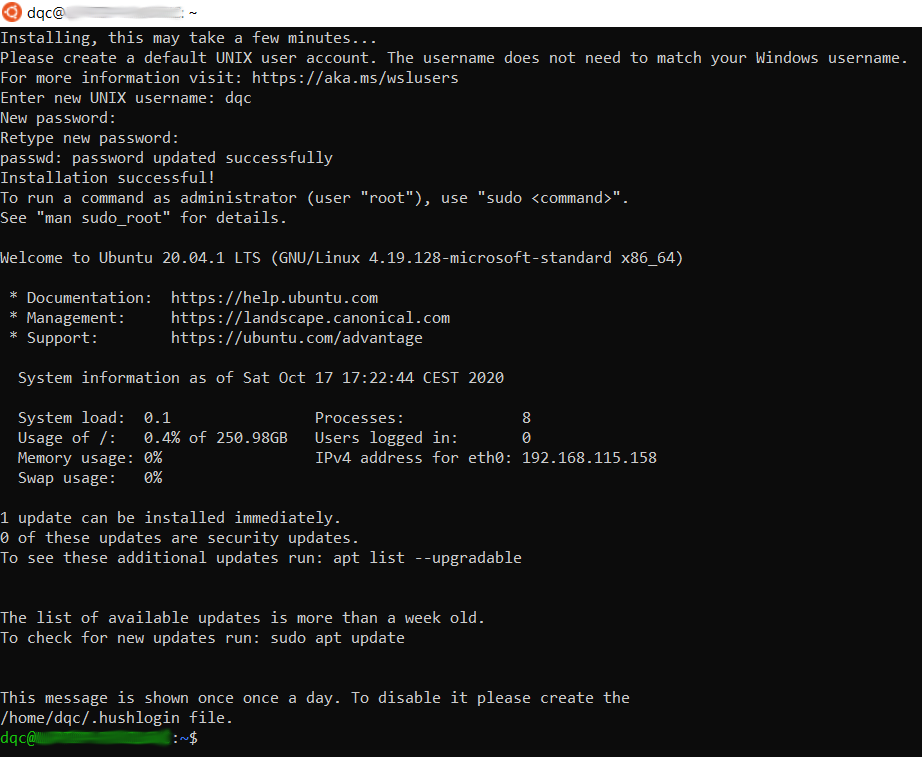
3.3. Update and upgrade
Run from the Linux terminal:
sudo apt-get update sudo apt-get upgrade -yTo run
sudoyou will be asked for the password set in the
previous stepThis might take a while, you should see something like this:
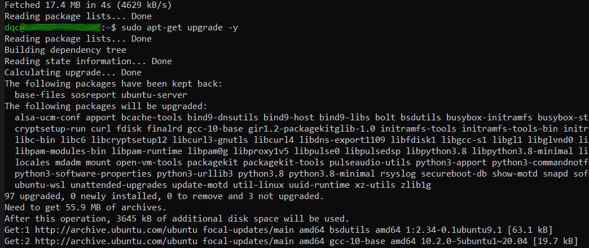
4. Install and check CDO
To install, simply run from the Ubuntu terminal:
sudo apt-get install cdo -yInstallation finished!
The last step works also for other Ubuntu based distros
It is also available for other distros e.g. Arch based
4.1. CDO version
Check that CDO is working with:
cdo --version
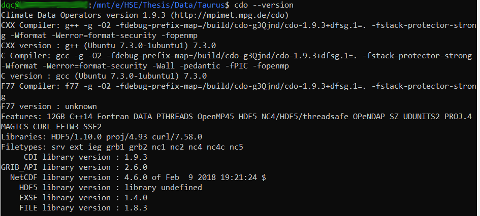
5. CDO installation in MacOS
The following solutions have not been tested by us but they reportedly work for MacOS. This information was taken from the CDO wiki
If needed, to install
homebrew:To install with
ruby, run this:ruby -e "$(curl -fsSL https://raw.githubusercontent.com/Homebrew/install/master/install)"If the last command doesn’t work, try:
curl -fsSL https://raw.githubusercontent.com/Homebrew/install/master/install > \ brew_install_script ruby brew_install_script rehash
6. Basic shell commands
To work from the terminal, some basic commands are needed:
mkdir→ creates directory. The following creates the folderdatain the current directorymkdir datapwd→ print working directory. To check the current working directorycd→ change directory. To access the created folder:cd datals→ list contents of current directorycp→ copy file. This copiesfile1tofile2cp file1 file2mv→ move files or directories (also to rename). The following movesfile1into the
created folder while renaming it tofile2mv file1 data/file2cat→ prints the content of a file (text)
7. Accessing Windows files from Linux
Download the
test.ncfile (here, undernc_files)If the file was downloaded to
C:\User\Downloads, to access the downloads folder do:cd /mnt/c/User/DownloadsTry some CDO commands as:
cdo sinfo test.nc # short description of the file cdo griddes test.nc # grid description, output on next slide cdo graph,device="png" -selgridcell,1 test.nc plot # quick plotThe CDO operators are here (explained) or type:
cdo --operatorsIf you encounter issues opening or accessing the file do:
sudo chown $USER test.nc
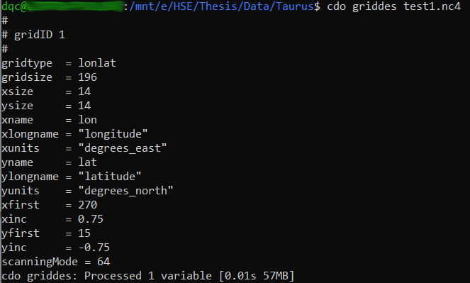
8. Accessing Linux files from Windows
Type
\\wsl$on the file explorer path (on the top), enterThen click Ubuntu → home → user
Should look something like this (note the plot created before):
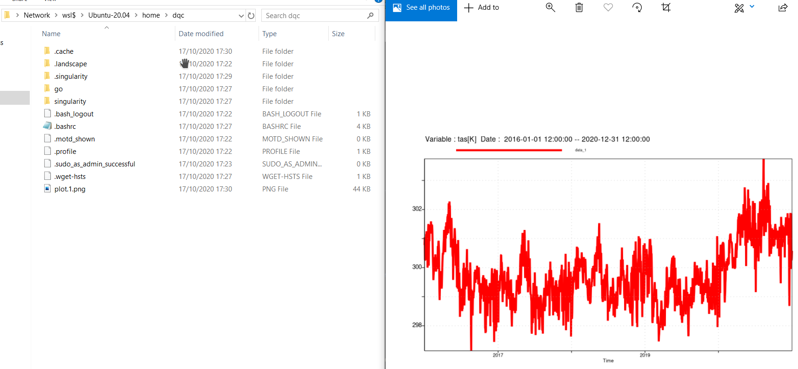
9. Exercise
Exploration of NetCDF files
Visualization of the files
A set of example files are in this repo,
nc_filesfolder
Manipulation of files
Selection of desired coordinates
Export data as text for further manipulation in other software
Download CORDEX files
10. Exploration
To have an idea of the contents of the file we can run some commands from
the terminal that will print some information to the screenCommands to try:
cdo sinfo file→ short description of the contentscdo griddes file→ description of the gridncdump file→ metadata description, not CDO but usefulTry with
-h(header) and-c(coordinates)
See more options with
cdo --operatorsCheck help of a operator with e.g.
cdo --help sellonlatboxor here
11. Visualization
It is possible to create high-quality plots from CDO by using the Magics software
Already included in the installation process explained before
The documentation of the use of
CDO+Magicsis hereThere are 3 types of plots with this combination
2D Lon-Lat plots:
shaded,grfillandcontour2D
vectorplots: plots vectors (e.g. wind fields) on 2D mapsLine
graphplots: generates time-series plots
Due to the rotated pole rotation embedded in CORDEX projections, 2D plotting
options within CDO are not availableThey only accept rectilinear grids and CORDEX is curvilinear
Reprojection needed to plot them
It can be done with CDO
Or check this repo for an R solution
11.1. 2D Lon-Lat
From the terminal, access the folder where the
2m_temperature.ncfile was downloadedThis file is a small example of a rectangular grid taken from ERA5
Run the following command
cdo -shaded,device=pdf,lon_max=-50,lon_min=-110,lat_max=30,lat_min=-10,\ interval=2,colour_triad=cw,colour_min=violet,colour_max=red \ -seltimestep,42 2m_temperature.nc shadedResulting file
shaded_2t.pdfshould be created, shown on next slideNote the arguments passed to CDO
Two functions,
shadedandseltimestep, are passed with corresponding parametersThe
-allows concatenation of several functionsHere we selected only the 42nd step.
The
\are only to break the line, this command could be written in one line
Try adding
,seq_freq=10afterred(no space) and removing-seltimestep,42Check resulting file
Try the
contourandgrfillcommands
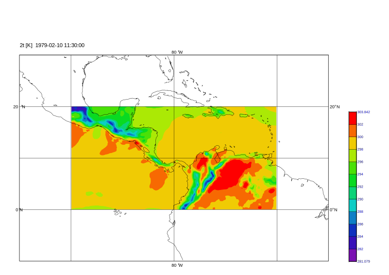
11.3. Line graph plots
These type of plots are possible with CORDEX files (no need for rectangular grids)
Let’s plot a time series for the city of Dresden
Run this command from the terminal:
cdo -graph,device=pdf,linewidth=4 -remapnn,lon=13.73/lat=51.05 \
mrso_EUR-44_ICHEC-EC-EARTH_rcp85_r12i1p1_SMHI-RCA4_v1_day_20960101-21001231.nc graphThe file
graph.pdfshould have been created in the working directoryNote the
remapnnfunction → remap to the nearest neighbourReturns the time series related to the pixel in which the given coordinate pair is
Plot in next slide
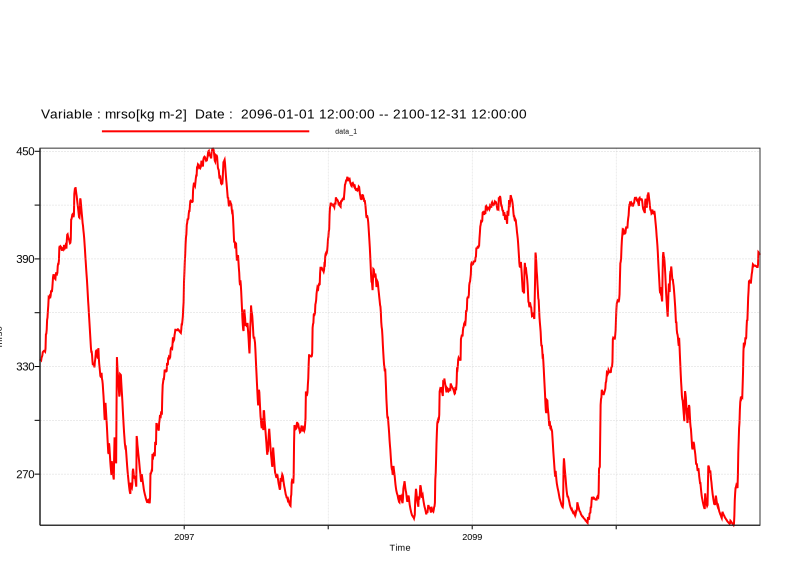
12. Manipulation of files
12.1. Merge
Merge all the provided historical run files into one and save into new file
cdo -z zip -mergetime \
mrso_EUR-44_ICHEC-EC-EARTH_historical_r12i1p1_SMHI-RCA4_v1_day_19* \
historical_1961-1990.ncNotes
-z zipto compress the file-mergetimeis the main function19*wildcard to give as input all the historical files instead of typing eachhistorical_1961-1990.ncis the name of the output file
Explore resulting file
12.2. Cropping
To select only a pixel where our location of interest is, again, for Dresden:
cdo -remapnn,lon=13.73/lat=51.05 \
mrso_EUR-44_ICHEC-EC-EARTH_rcp85_r12i1p1_SMHI-RCA4_v1_day_20960101-21001231.nc \
mrso_dresden.ncTo select the pixels inside a boundary box, Saxony (approx.) for example:
cdo -sellonlatbox,11.5,15.5,49.7,52.2 \
mrso_EUR-44_ICHEC-EC-EARTH_rcp85_r12i1p1_SMHI-RCA4_v1_day_20960101-21001231.nc \
mrso_saxony.ncCheck the files with
griddesandsinfo
12.3. Exporting to text
For further analysis and plots, one might want to export some information in text format
For example, for the previous file for Dresden:
cdo -outputkey,year,month,day,lon,lat,value mrso_dresden.nc > table.txtThe file
table.txtwill be created and can be parsed with e.g. R, Python or Excel to do:Further statistical analysis
Boxplots comparing historical vs future conditions
Day of the year plots, etc.
13. Downloading CORDEX files
Create account for ESGF node
Login with your
OpenIDafter receiving confirmation emailRegister to the CORDEX group
Explore and select desired data (checked boxes, note, for later where the pointer is)
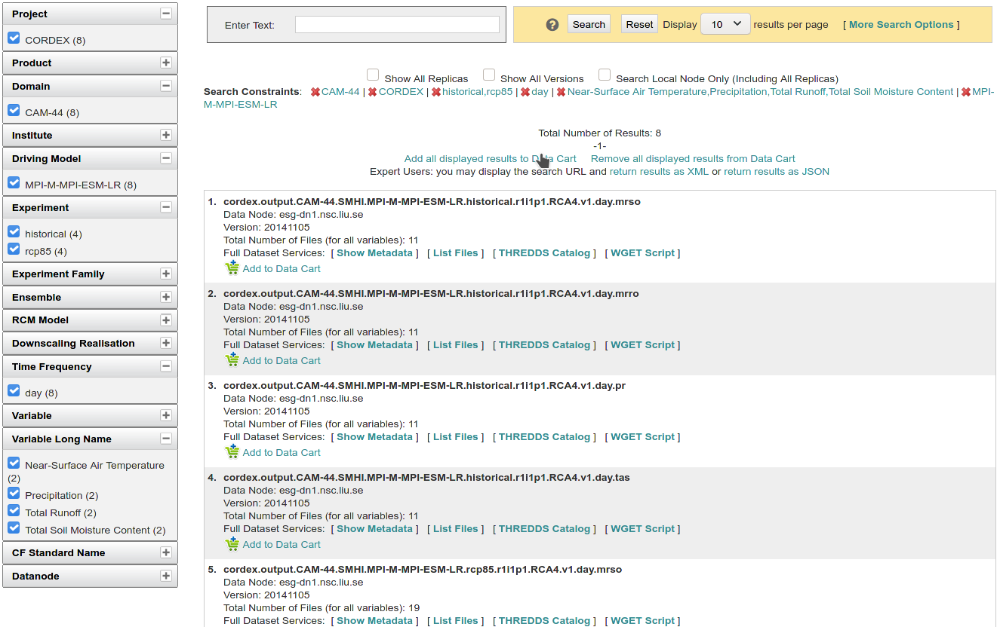
13.1. File by file
To download file by file through your browser click on
list filesThen click on
HTTP Download, this will open a prompt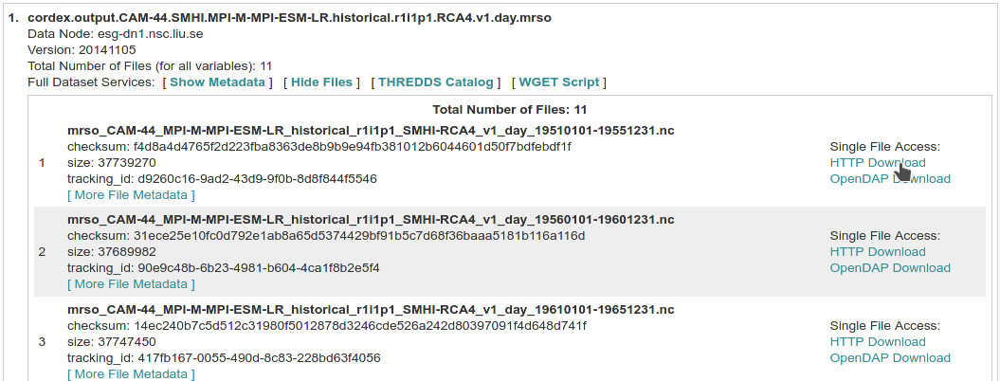Save file and repeat
Note that CORDEX files are usually on a 5 years basis (daily)
13.2. The automated way
Click on
Add all displayed results to Data Cart(where the pointer was in the penultimate image)Go to your
data cart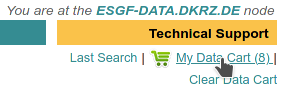Here you can select datasets to download. When ready, click on
WGET Script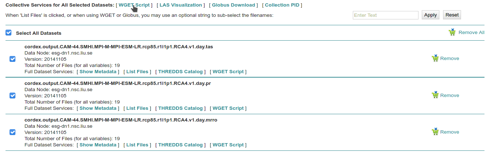Depending on your dataset, there might be several
WGET Scripts. Click and save them.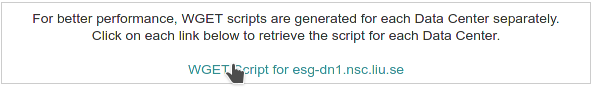
13.3. Run script
Open a Linux terminal
Go to your downloads folder (see point 7)
Run the following command (change the name appropriately):
bash wget-20201026140831.sh -H # The -H is to interactively enter your credentialsGive credentials, the full
OpenIDlooks likehttps://esgf-node.llnl.gov/esgf-idp/openid/userThis will start the download process of the
NetCDFfilesThis process will take a while and should look like this:
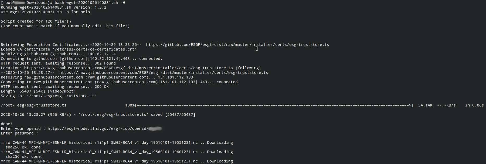
14. Homework
Download CORDEX files for your home region (if not available choose Lisbon or Delft)
Historical period: 1961-1990
Projected: RCP 8.5 2070-2100
Variables: temperature, precipitation and either run off or soil moisture content
Merge and crop files for your country and city
Perform statistical analysis for the 3 variables in another software
Box plots of historical vs projected for your city
Plot time series for your home city
Both periods and all variables
Extra points for:
Probability density function plot for both periods
Average Day of the year (1-365) comparison plot
Monthly comparison boxplots
2D map of average difference between the periods in your home country
Tips:
sellatlonbox, this repo, or reprojection with CDO (remapbil)
15. Questions — ideas for the extra points?
| You can contact me! |